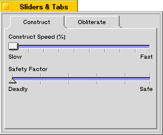

|
If the tab doesn't have a target view, SetLabel() does nothing. Make sure a target view has been set (by calling SetView(), BTabView::AddTab() with a valid target view argument, or in the BTab constructor) before you call SetLabel().
|
| The Interface Kit Table of Contents | The Interface Kit Index |
Derived from: public BArchivable
Declared in: be/interface/TabView.h
Library: libbe.so
The BTab class defines the tabs used by the BTabView class. Each tab is represented by a single BTab object, which is called to render and manage the tab.
When a tab is created, a target view is specified as a parameter to the BTab constructor, or by calling SetView(). The target view is the view that will be displayed in the BTabView's container view when the BTab is selected.
Users select tabs by clicking on them, or by using keyboard navigation to focus and select the tab.
An example of how to create a BTabView and attach BTab objects to it is given in the BTabView section.
Customizing the appearance of your tabs is achieved by overriding the DrawTab(), DrawFocusMark(), and/or DrawLabel() functions.
These functions are responsible for all drawing of the BTab. DrawTab() renders the entire tab, excluding the focus mark: it draws the borders and calls DrawLabel() to render the text of the label.
DrawFocusMark() draws the indicator that shows which tab is the current focus for keyboard navigation.
By default, tabs have a beveled, rounded look. Let's look at an example in which we replace this appearance with a square shape:

To do this, we create a new class, derived from BTab, that overrides the DrawTab() function.
class CustomTab : public BTab {
public:
virtual void DrawTab(BView *owner, BRect frame,
tab_position position, bool full=true);
};
The DrawTab() function is implemented as follows:
const rgb_color kWhite = {255,255,255,255};
const rgb_color kGray = {219,219,219,255};
const rgb_color kMedGray = {180,180,180,255};
const rgb_color kDarkGray = {100,100,100,255};
const rgb_color kBlackColor = {0,0,0,255};
void CustomTab::DrawTab(BView *owner, BRect frame, tab_position position,
bool full) {
rgb_color hi;
rgb_color lo;
// Save the original colors
hi = owner->HighColor();
lo = owner->LowColor();
// Draw the label by calling DrawLabel()
owner->SetHighColor(kBlackColor);
owner->SetLowColor(kGray);
DrawLabel(owner, frame);
// Start a line array to draw the tab --
// this is faster than drawing the lines
// one by one.
owner->BeginLineArray(7);
// Do the bottom left corner, visible
// only on the frontmost tab.
if (position != B_TAB_ANY) {
owner->AddLine(BPoint(frame.left, frame.bottom),
BPoint(frame.left+3, frame.bottom-3), kWhite);
}
// Left wall -- always drawn
owner->AddLine(BPoint(frame.left+4, frame.bottom-4),
BPoint(frame.left+4, frame.top), kWhite);
// Top -- always drawn
owner->AddLine(BPoint(frame.left+5, frame.top),
BPoint(frame.right-5, frame.top), kWhite);
// Right wall -- always drawn. Has a nice bevel.
owner->AddLine(BPoint(frame.right-4, frame.top),
BPoint(frame.right-4, frame.bottom-4), kDarkGray);
owner->AddLine(BPoint(frame.right-5, frame.top),
BPoint(frame.right-5, frame.bottom-4), kMedGray);
// Bottom-right corner, only visible if the tab
// is either frontmost or the rightmost tab.
if (full) {
owner->AddLine(BPoint(frame.right-3, frame.bottom-3),
BPoint(frame.right, frame.bottom), kDarkGray);
owner->AddLine(BPoint(frame.right-4, frame.bottom-3),
BPoint(frame.right-1, frame.bottom), kMedGray);
}
owner->EndLineArray();
owner->SetHighColor(hi);
owner->SetLowColor(lo);
}
The owner parameter is a pointer to the BView in which the tab is drawn. frame is the frame rectangle of the tab; the tab should be drawn to fill this rectangle. The position parameter, which can be one of the following values, specifies the placement of the tab, to assist in making intelligent decisions on which parts of the tab are visible and which are not:
| B_TAB_FIRST | The tab is the leftmost tab (the one with index 0 in the BTabView). |
| B_TAB_FRONT | The tab is the frontmost tab. |
| B_TAB_ANY | The tab neither the frontmost nor the leftmost tab. |
This is a fairly trivial example, and is self-explanatory—with two caveats:
// Do the bottom left corner, visible
// only on the frontmost tab.
if (position != B_TAB_ANY) {
owner->AddLine(BPoint(frame.left, frame.bottom),
BPoint(frame.left+3, frame.bottom-3), kWhite);
}
This code is responsible for drawing the portion of the tab that connects to the box surrounding the BTabView's container. In our custom BTab, this is simply a diagonal line that extends from the bottom left corner of the frame upward and inward slightly.
However, this portion of the tab is only visible on the first or frontmost tab, so we only draw this segment if its position isn't B_TAB_ANY (in other words, if its position is either B_TAB_FRONT or B_TAB_FIRST).
// Bottom-right corner, only visible if the tab
// is either frontmost or the rightmost tab.
if (full) {
owner->AddLine(BPoint(frame.right-3, frame.bottom-3),
BPoint(frame.right, frame.bottom), kDarkGray);
owner->AddLine(BPoint(frame.right-4, frame.bottom-3),
BPoint(frame.right-1, frame.bottom), kMedGray);
}
This code, which draws the lower-right corner of the tab (where it meets back up with the box surrounding the container view), only runs if the full parameter is true. This is because the right edge of a tab can be obscured by the tab to its left.
Deselect()
Can be augmented if your derived class needs to perform additional functions when a tab is deselected. You should always call the inherited version of the function once your additional code has run.
DrawFocusMark()
Can be overridden to draw the mark indicating that the tab is the current focus. This lets you customize the appearance of your tabs.
DrawTab()
Can be overridden to customize the appearance of your tabs. This function should call DrawLabel() and draw the tab itself.
DrawLabel()
Can be overridden to customize the appearance of your tabs. This should simply draw the string returned by the Label() function as the tab's title.
Select()
Can be augmented if your derived class needs to perform additional tasks when a tab is selected. You should always call the inherited version of the function before your implementation returns.
SetEnabled()
Can be augmented if your derived class needs to perform additional actions when a tab is enabled or disabled. You should always call the inherited version of the function before your implementation returns.
SetLabel()
Can be augmented to take notice when the tab's label is changed. You should always call the inherited version of the function before your implementation returns.
SetView()
Can be augmented to take notice when the target view of a tab is changed. You should always call the inherited version of the function before your implementation returns.
|
Initializes the BTab to be enabled, but neither selected nor the current focus. The specified view becomes the tab's target view—when the tab is selected, its target view is activated. See the BTabView class for further details on how this works.
If an archive message is specified, the message's contents are used to duplicate the archived BTab object.
See also: SetView()
|
Frees all memory the BTab allocated. If there is a target view assigned to the tab, it is removed from the parent window and deleted.
|
Returns a new BTab object, allocated by new and created with the version of the constructor that takes a BMessage archive. However, if the message doesn't contain archived data for a BTab, Instantiate() returns NULL.
See also: BArchivable::Instantiate(), instantiate_object(), Archive()
|
Calls the inherited version of Archive() and stores the BTab in the BMessage archive.
See also: BArchivable::Archive(), Instantiate() static function
|
These three functions can be implemented by your BTab-derived class to create a new visual appearance for your application's tabs. The owner is the BView in which your tab is being drawn, and the frame is the rectangle in which the tab is to be drawn.
The DrawFocusMark() function draws the mark indicating that the BTab object is in focus. By default, this consists of a line in the keyboard navigation color, drawn across the bottom of the tab's frame rectangle.
DrawTab() is called to draw the tab. It draws the tab's title by calling DrawLabel(), then renders the lines to create the tab itself. The position of the tab may affect how the tab is rendered—for example, if the tab is frontmost, it may have a different appearance than the other tabs.
If full is true, the complete tab is drawn inside the frame rectangle. If full is false, the right side of the tab is being obscured by the tab to its left, so the right edge should be eliminated or truncated as necessary.
|
The IsEnabled() function returns the true if the tab is enabled (and can therefore be selected by the user) or false if the tab is disabled.
SetEnabled() is called to enable or disable the tab. Pass a value of true to enable the tab, or false to disable it.
|
The IsSelected() function returns true if the tab is currently selected, false if it's not.
Deselect() is called to deselect the tab. This removes the tab's target view from the owner window by calling the target view's RemoveSelf() function.
Select() is called to select the tab. This also adds the tab's target view to the specified owner view. This is called after the previously selected tab's Deselect() function is called.
|
The Label() function returns the tab's label. The label is the same as the target view's name.
SetLabel() is called to set the tab's label. This also changes the target view's name to match the tab's label, if a target view exists.
|
|
IsFocus() returns true if the tab is the current focus or false if it is not.
MakeFocus() specifies whether or not the tab is the current focus. Pass true to make the tab the current focus, or false if you don't want it to be the focus.
|
The View() function returns the tab's target view.
SetView() is called to set the tab's target view to the specified view.
The Archive() function adds the following field to its BMessage argument:
| Field | Type code | Meaning |
|---|---|---|
| "_disable" | B_BOOL_TYPE | true if the tab is disabled. Not present if the tab is enabled. |
| The Interface Kit Table of Contents | The Interface Kit Index |
Copyright © 2000 Be, Inc. All rights reserved..